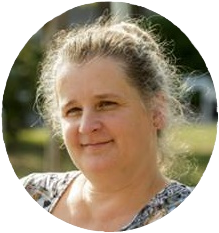

Rólam
Fodorné Vincze Anna vagyok, klinikai szakpszichológus.
24 évig dolgoztam az egri Nevelési Tanácsadóban, problémás gyerekekkel és családjukkal foglalkoztam és rengeteget tanultam tőlük. Legalább ennyit - ha nem többet- tanulok saját 3 gyermekemtől és hálás vagyok értük. Hála illeti férjemet is, aki 25 éve a társam mindenben.
9 éve vezetek csoportokat daganatos betegeknek különböző helyszíneken (Eger, Miskolc), ahol a Simonton-módszer megtanulásával mozgósítjuk a test saját, belső öngyógyító erőit a gyógyulás érdekében. Nagyon szép történeteket tudnék mesélni, betegségről, gyógyulásról, gyűlölködésről, megbocsájtásról, barátságról, szeretetről. A csoporttagok általában szeretnének együttmaradni a tanfolyam után is, erre találtuk ki a Simonton-klubot. Rendszeresen találkozunk, gyakorolunk, beszélgetünk, értékes emberek előadásait hallgatjuk, szóval töltekezünk. Mert mi már tudjuk, hogy erre nagy szükségünk van.
Szeretném, ha minél többen elhinnék, megtapasztalnák, hogy a rák is csak olyan betegség, mint a többi, meg kell keresni a lehető legjobb orvosi ellátást, de a legtöbbet mi magunk tehetjük a gyógyulásunkért! Ha aktívan gyakoroljuk belső öngyógyító erőink mozgósítását, ha alakítunk szemléletmódunkon, és életmódunkon, ott, ahol szükséges, ha jó, erős, életfontosságú és életben tartó célokat találunk, minden tőlünk telhetőt megtettünk a gyógyulásunkért. Ha pedig még azt is sikerül megfejteni, miért kaptuk ezt a feladatot (nem büntetést!), amit a rák jelent, elégedettekké válhatunk, ami sokszor több, mint a boldogság.
Szeretem és élvezem a munkámat. Sikerélményt és állandó kihívást jelent számomra. Rengeteg értékes emberrel találkozom, gyűjtöm őket, ez a szenvedélyem.
Szeretek előadásokat tartani, pszichológiai ismereteket terjeszteni… szeretem a hallgatóságot aktivizálni… szeretem, ha csillogni kezd a szemük, és az idő múlását észre sem véve csak beszélgetünk és beszélgetünk….
Legjobb barátnőmmel (maga is gyógyult daganatos beteg) dolgozhatok közösen egy Alapítványban, a Regionális Egészségügyért Alapítványban, ahol a Simonton-módszer mellett számos hasznos tréninget és egyéni tanácsadást tartunk a betegek részére: meditációkat, imaginációkat vezetek, hogy mindenki rátalálhasson a belső békéjére, belső erőforrására… találkozunk a belső vezetőnkkel, feloldjuk a sejt-szinten tárolt, megbetegítő hatású emlékeinket, érzéseinket… kommunikációt, konfliktus-kezelést, asszertivitást tanítunk.
Fontosnak tartjuk a prevenciót, a visszaesések megelőzését, a betegség kialakulására hajlamosító szemléletmód, életmód, pszichés és egyéb tényezők felderítését.
Fontosnak tartjuk a családtagok pszichés támogatását, a sorstárs-közösség megtartó erejét.
Fontosnak tartjuk a segítő foglalkozásúak képzését, önismereti és pszichés támogatását, kiégés elleni védelmét. Szóval sok mindennek foglalkozunk.
Hálás vagyok, hogy elolvasott. Keressen nyugodtan, ha segíthetek!
Szakmai önéletrajz
Fodorné Vincze Anna klinikai szakpszichológus, Simonton edukációs-csoport tréner
1994-től 2018-ig dolgoztam az egri Nevelési Tanácsadóban pszichológusként. Gyermekek pszichoterápiája, szülőkkel való konzultáció, szűrővizsgálatok és szakértői vizsgálatok sorát végeztem nap, mint nap.
2004-2005 között óraadó pszichológiatanár voltam az egri Gárdonyi Géza Gimnáziumban. 2000 és 2008 között pszichológiát tanítottam az Országos Írásszakértő Intézetben.
2010-től dolgozom az egri Mentálhigiénés Csoportnál, ahol Simonton- tréningeket tartok daganatos betegeknek. 2012-től a miskolci BAZ Megyei Központi Kórház és EOK Onkológiai Centrumában tartok Simonton- edukációs tréningeket a betegeknek.
A Regionális Egészségügyért Alapítvány szakmai vezetőjeként tréningeket vezetek és számos különféle rendezvény szervezésében, lebonyolításában veszek részt önkénteseinkkel együtt.
A Regionális Egészségügyért Alapítványt 2010-ben hoztuk létre fiatal szakorvosok kezdeményezésére.
Célkitűzéseink közé tartozik a betegségek megelőzése, az egészségügyi szolgáltató rendszer hatékonyságának növelése, eredményességének fokozása és az egészségtudatos magatartás formálása.
Önkéntes szakembereink 2010 óta tartanak Egerben és Miskolcon komplex jellegű edukációs foglalkozásokat daganatos betegeknek és hozzátartozóiknak. Alapítványunk ismereteket, módszereket és segítő közösséget biztosít az érintettek számára, hogy eredményesen küzdhessenek meg a betegségükkel. A Simonton-módszer, amit alkalmazunk, orvosok által tudományosan kidolgozott, és kutatásokkal alátámasztott, hatékonyan működő gyógyító eljárás. Az alapítványunk kereteiben 8 éve
folyamatosan tartjuk a Simonton-csoportokat, klubokat, és különféle rendezvényeket daganatos betegeknek Egerben és Miskolcon, önerőből, karitatív módon, a betegeknek ingyenesen. Támogató partnerünk a Magyar Rákellenes Liga és a Miskolci és Megyei Kórház Onkológiai Centruma.
Csoportokat szervezünk a daganatos betegséggel érintettek számára ahol megismertetjük őket a Simonton- módszerrel. A módszer alkalmazásának kedvező hazai tapasztalatai vannak.